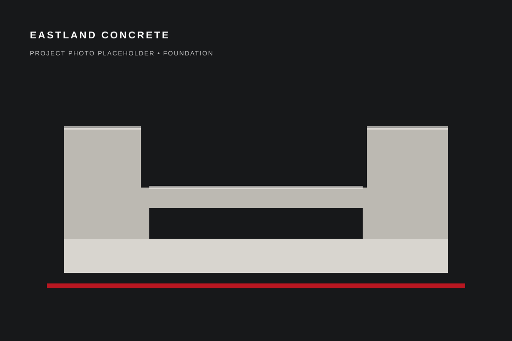

Built around the actual project.
This test page is structured to become a focused service landing page instead of a one-line service label. At launch it will combine useful explanations, real Eastland project photos, customer questions and a direct estimate path.

Planned service coverage
- Foundation concrete for additions and remodels
- Footings and related structural concrete
- New-construction foundation work
- Planning and estimate conversations before the pour
Owner confirmation needed before launch
Final launch copy should spell out exactly which excavation, grading, rebar, wall, footing and foundation-repair tasks Eastland handles after Tommy confirms the scope.
Why this page matters for search
Someone searching for a specific concrete project should land on a page that directly addresses that project. Separate service pages also give us room for project photos, FAQs, internal links and location-specific proof without stuffing the homepage.